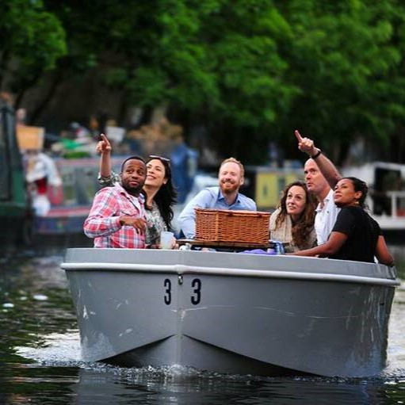
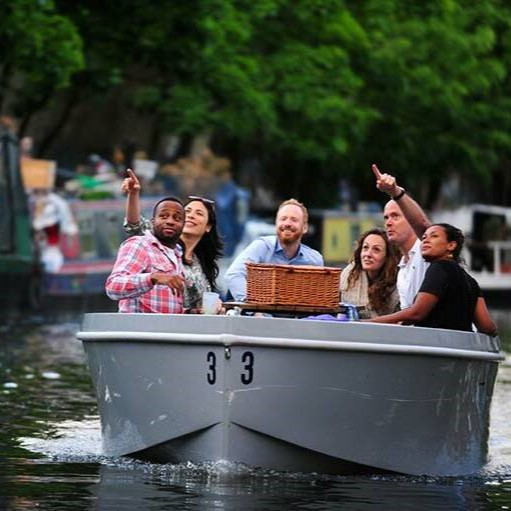
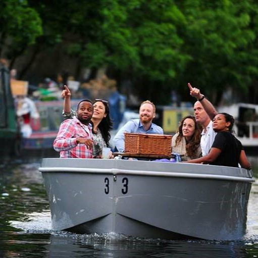

London is the capital and largest city of England and the United Kingdom, with a population of just under 9 million. The City of London, its ancient core and financial centre, was founded by the Romans as Londinium and retains its medieval boundaries. As one of the world's major global cities, London exerts a strong influence on its arts, entertainment, fashion, commerce and finance, education, health care, media, science and technology, tourism, and transport and communications.
Big Ben is the nickname for the Great Bell of the Great Clock of Westminster, at the north end of the Palace of Westminster in London, England, and the name is frequently extended to refer also to the clock and the clock tower. The official name of the tower in which Big Ben is located was originally the Clock Tower, but it was renamed Elizabeth Tower in 2012 to mark the Diamond Jubilee of Elizabeth II.
Adress: Big Ben, Westminster, London SW1A 0AA, United Kingdom
Commonly known as the O2, is an indoor arena in the centre of the O2 entertainment complex in southeast London. It opened in its present form in 2007. It has the second-highest seating capacity of any indoor venue in the United Kingdom, behind the Manchester Arena, and in 2008 was the world's busiest music arena. Climbing the O2 is a breath taking experience that usually takes around 90 minutes.
Adress:Peninsula Square, London SE10 0DX, United Kingdom
A 114.5-metre sculpture and observation tower in the Queen Elizabeth Olympic Park. It is Britain's largest piece of public art, and is a legacy of London's hosting of the 2012 Olympic and Paralympic Games, assisting in the post-Olympics regeneration of the Stratford area. The ArcelorMittal Orbit allows visitors to view the whole Olympic Park from two observation platforms.
AdressArcelorMittal Orbit, 3 Thornton Street, Queen Elizabeth Olympic Park, Stratford, London, E20 2AD
| London Eye | Riverside Building, County Hall, London SE1 7PB |
| Madame Tussauds | Marylebone Rd, London NW1 5LR |
| Harry Potter Warner Bros Studio | Warner Bros. Studio Tour London, Studio Tour Dr, Leavesden, Watford WD25 7LR |
